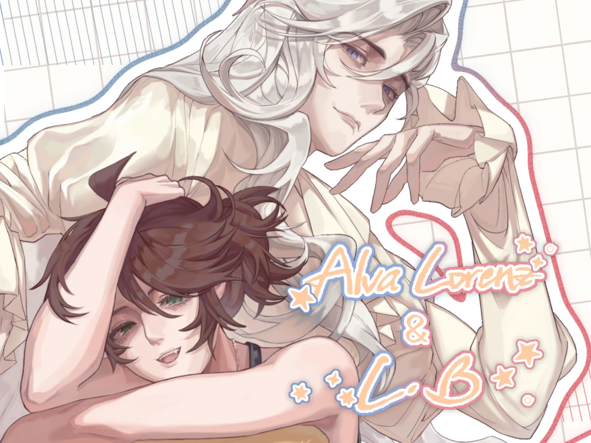
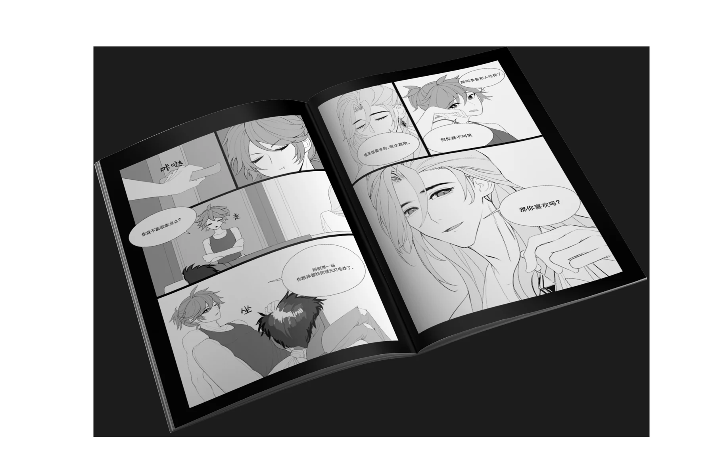

徐萱
Collected works / 2024—26
精选项目
关于我
联系
EN
PORTFOLIO / SELECTED WORKS
2024—2026
创意策划 · 品牌视觉 · 项目落地
让想法
有形，
有回响。
我是徐萱。把创作的直觉，变成能被看见、被喜欢、被带回家的作品。
翻开我的项目

01 / SILENCE — CONTENT TO PRODUCT

FROM
IDEA TO
REAL LIFE
一个想法的完整旅程
中央美术学院 · 艺术管理
SCROLL TO DISCOVER
SHANGHAI / CHINA